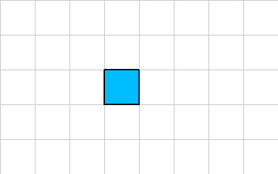
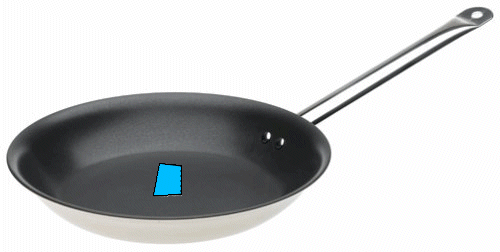
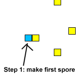
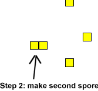

VOLVE 5.0
VOLVE 5.0
Spores
This is your spore,
This is your spore on drugs,

What is a spore?
When you explore a simulation you'll notice blue squares. These are spores. Spores are created when an organism executes the instruction MAKE-SPORE.
A spore is the first stage in reproducing a new organism. The second (and last) stage is when a second spore is created on top of the first one. At this point the spore becomes fertilized and a new organism is born.
A spore, as the name implies, is like an egg or sperm. When first created, it contains an exact copy of the genetic program from the organism that created it (no mutations have been applied yet). When the second spore is created, the genetic program from that organism is merged with the genetic program associated with the spore. If this happens to be the same organism, then the result is an exact copy of this organisms genetic program (asexual reproduction). However, if the second organism is different then the two programs get merged, and unique variation could be created.
Asexual Reproduction
Asexual reproduction occurs when the same organism creates a spore and then fertilizes it. Here are the instructions that an organism might execute to perform asexual reproduction:
-1 0 5 MAKE-SPORE ; create spore at relative offset (-1, 0) ; with an energy of '5'. -1 0 6 MAKE-SPORE ; create second spore at relative offset (-1, 0) ; with an energy of '6'. ; (a new organism will be created, with energy of 11)
That's about all there is to know about asexual reproduction. You may be wondering how genetic variation gets generated since the child program is identical to the parent? Well, in creating the new organism mutations (a seperate process) may have been introduced, so the child genetic program may be slightly different than it parent.
Sexual Reproduction
Sexual reproduction occurs when two organisms donate a spore toward the creation of a new organism. What happens in this case is organism A creates a spore. Then organism B comes along and creates a second spore on top of the first.
Sexual reproduction differs from asexual reproduction in that two different genetic programs must be merged before the new organism is created.
Merging Genetic Programs
In sexual reproduction the genetic programs from the first and second spore must be merged. This is the concept of recombination. It has the potential to create a gene pool in the universe.
Organism A creates the first spore, and then organism B comes along and fertilizes it. In this example we have two different genetic programs to merge. Here is how it happens:
First a random bit string is generated. The bit string consists of 16-bits. For examples, lets assume the bit string is 0101010101010101. This bit pattern is used to select the code block from the first or second organism. A "0" selects organism A and "1" selects the code block from organism B. The bit string is repeated as needed to cover all the code blocks. If one of the organisms has more code blocks, then it is always selected and added to the offsprings kforth program.
Here is the genetic program for organism A:
main: { X X Y Z }
row1: { 1 2 3 }
row2: { X0 Y0 }
row3: { K 1 I 8 }
row4: { R 1 2 J }
row5: { B B 89 }
Here is the genetic program for organism B:
main: { A B C }
row1: { JJ YY ZZ }
row2: { W P Q
row3: { RY RY Z }
row4: { S X S 0 }
Here's how the two genetic programs are merged:
| Bit | Organism A | Organism B | Offspring | |
| main: | 0 | X X Y Z | A B C | X X Y Z |
| row1: | 1 | 1 2 3 | JJ YY ZZ | JJ YY ZZ |
| row2: | 0 | X0 Y0 | W P Q | X0 Y0 |
| row3: | 1 | K 1 I 8 | RY RY Z | RY RY Z |
| row4: | 0 | R 1 2 J | S X S 0 | R 1 2 J |
| row5: | 1 | B B 89 | empty | B B 89 |
This example shows a new variation being added to the gene pool. Evolve 5.0 doesn't enforce sexual reproduction it just offers the capability, assuming that something might evolve to use it.
Only organism A has a row5 so it always gets tranferred to the offsprings genetic program.